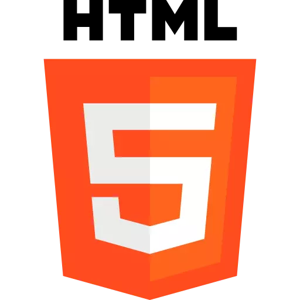

ABOUT ME
A LITTLE ABOUT MYSELF
Web Developer
I am Ruan Lauro Cardoso da Silva Monteiro, I live in Brazil, in the state of Piauí. I am a fulltack developer, but I have greater focus on front-end. I am a university student, I take the COURSES of ADS (analysis and system development) in IFPI, aimed at developers. I am a person who loves to learn, striven; i can abstract learning information very quickly; I like to leave everything in order and organized, I value personal and professional doctrine.
My focus is always more within the development area and I seek a way to always grow professionally and improve my applications more and more. As a matter of hobby, I like to draw, play the guitar, program, play and read books.
Languages and knowledge
